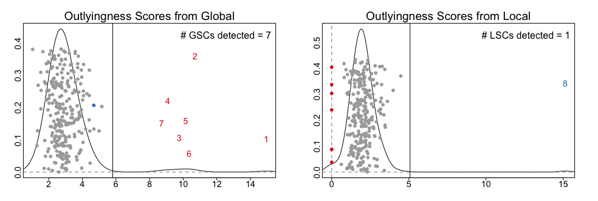

A toy dataset is available in the SCISSOR package:
library(SCISSOR)
data(TOY_data)
This dataset contains base-level coverage of a hypothetical gene TOY including three exons and the whole intronic regions between the exons. Among n=260 cases, there are eight samples with strong shape changes. Here, we aim to identify these eight shape changes using SCISSOR.
Data preparation
We first obtain pileup data matrix using build_pileup and genomic ranges using get_Ranges that will be used as inputs for the function Scissor:
Gene = toygene_symbol
regions = toygene_regions
pileupData = build_pileup(Pileup=toygene_coverage,regions=regions,
inputType="whole_intron",outputType="part_intron")
geneRanges = get_Ranges(Gene="TOY",regions=regions,outputType="part_intron")
caseIDs = colnames(pileupData)
In practice, you will often obtain pileup data directly from BAM files. This can be done with read_BAM (see Tutorial). If you do not specify sample IDs, the build_pileup and read_BAM will generate the IDs by default as follows:
> head(caseIDs)
[1] "case-1" "case-2" "case-3" "case-4" "case-5" "case-6"
Statistical analysis
The whole procedures of SCISSOR can be performed by using all-in-one function Scissor (see Tutorial).
ScissorOutput=Scissor(pileupData=pileupData,Ranges=geneRanges)
The object ScissorOutput is a large list containing the results. The identified shape changes are saved in ScissorOutput$SC and the resulting outlyingness scores from each of the global and local procedures are saved in ScissorOutput$GSC$OS and ScissorOutput$LSC$OS, respectively. You can plot the outlyingness scores using plot_ScissorOS:
par(mfrow=c(1,2))
plot_ScissorOS(object=ScissorOutput,colmat=NULL,textSC=TRUE)

The figures show the indices of outlier samples with the kernel desntify estimates from the scores.
You can also visualize the identified shape changes using plot_pileup:
par(mfrow=c(4,2),mar=c(2,2,2,2))
for (case in ScissorOutput$SC) {
plot_pileup(Pileup=ScissorOutput$logData,Ranges=geneRanges,cases=case,
logcount=ScissorOutput$logshiftVal)
}

The first seven outliers are associated with exon skipping or intron retention whereas the last outlier is showing small deletion in the middle of the first exon.